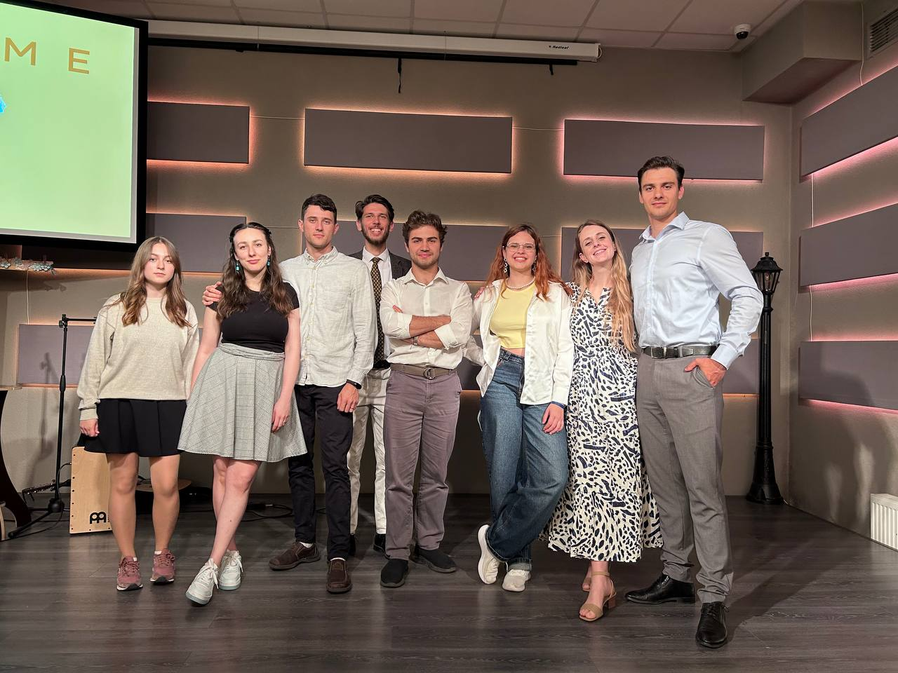

Reach
We engage young people and professionals through English Clubs and special events. We create a welcoming space to build friendships and share the Gospel through music and conversation.
We invest in the next generation, make disciples, and multiply churches across Moldova.
We engage young people and professionals through English Clubs and special events. We create a welcoming space to build friendships and share the Gospel through music and conversation.
We walk alongside new believers through small groups and one-on-one mentorship. We help them study God's Word and become committed disciples who live out their faith daily.
We empower leaders to plant home churches. Our vision is to establish one fellowship for every 1,000 people. We equip believers to open their homes and lead spiritual communities.

Every week we gather with students and young professionals who are searching for meaning, community, and truth. These evenings begin with music and open conversation, creating a safe space where people feel welcomed regardless of their background or beliefs.
Through Bible discussions, personal stories, and honest questions, many have encountered Jesus for the first time. Some arrived as curious seekers and left as committed followers, ready to share what they found with their own families and friends.
Target Life is not just a program — it is a movement of ordinary people choosing to live for something greater. We believe that as each person grows in faith and opens their home to others, the Gospel will spread naturally from one life to the next, until every corner of Moldova has been touched.